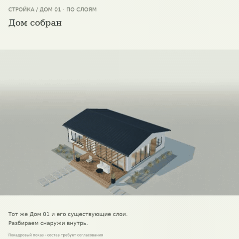

Разобрать. Понять. Собрать.
Шесть последовательных фаз, пояснения, паузы у слоёв и обратная сборка. В прототипе камера может сопровождать показ; ручное вращение передаёт управление вам.
Открыть анимированную GIF-версию · Дом по слоям крупно
Если видео не открывается — показать GIF здесь

Открыть интерактивный прототип →
Предыдущий этап: расстановка кроватей →
Покадровая демонстрация 61 настоящего положения модели с фиксированным ракурсом и монтажными паузами. Это не непрерывная запись и не замер FPS. Полный состав конструкций, изделия и узлы требуют согласования. Физический iPhone/Safari не проверен. Рабочий сайт и сервер не менялись.